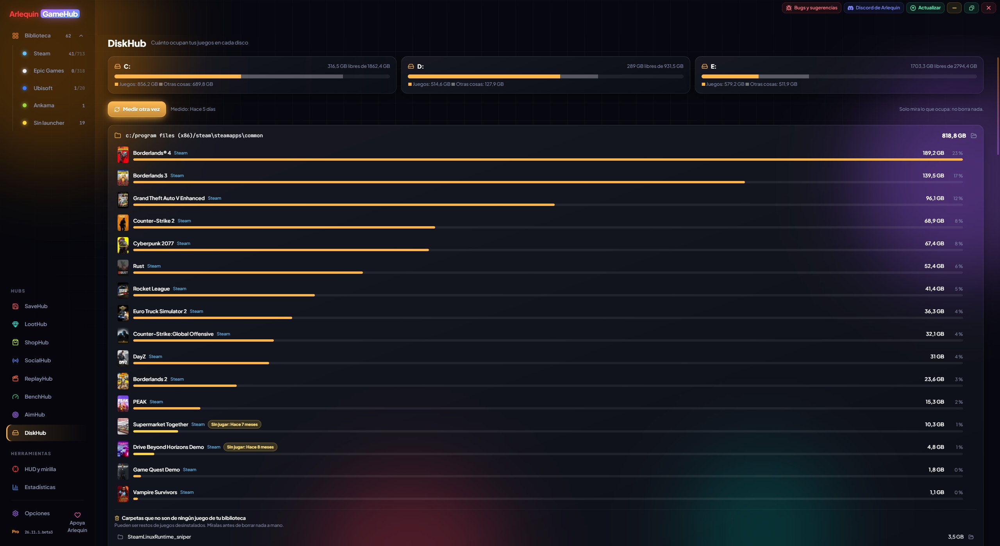

💽
DiskHub
각 게임이 드라이브에서 차지하는 용량, 그리고 남는 용량.
DiskHub는 각 드라이브를 게임이 차지하는 용량, 그 밖의 모든 것, 여유 공간과 함께 보여 줍니다. 그 아래에는 각 라이브러리(스토어가 게임을 보관하는 폴더)와 그 안의 게임이 큰 순서로 표시되며, 6개월 넘게 플레이하지 않은 게임은 노란색으로 표시됩니다.
잔여 파일도 찾아 줍니다. 더 이상 어떤 게임에도 속하지 않는 라이브러리 안의 폴더로, 대개 삭제된 게임의 흔적입니다. 또한 TreeSize처럼 게임이나 폴더를 열어 무엇이 용량을 차지하는지 볼 수 있습니다. DiskHub는 보기만 하며 아무것도 삭제하지 않습니다.
사용 방법
- DiskHub는 사이드바의 Hubs 아래에 있습니다.
- 처음에는 스스로 측정하며, «측정»은 파일 용량을 다시 합산하고, 다음에는 즉시 표시됩니다.
- 게임이나 잔여 파일을 클릭하면 그 폴더를 따라 내려가거나 파일 탐색기에서 열 수 있습니다.
- Xbox 게임은 함께 표시되고 전체가 측정되며, Microsoft Store 프로그램은 더 이상 잔여 파일로 표시되지 않고, Windows가 압축한 파일은 디스크상의 크기를 보여 주며, “중지” 버튼이 있습니다.

✦ 다른 기능